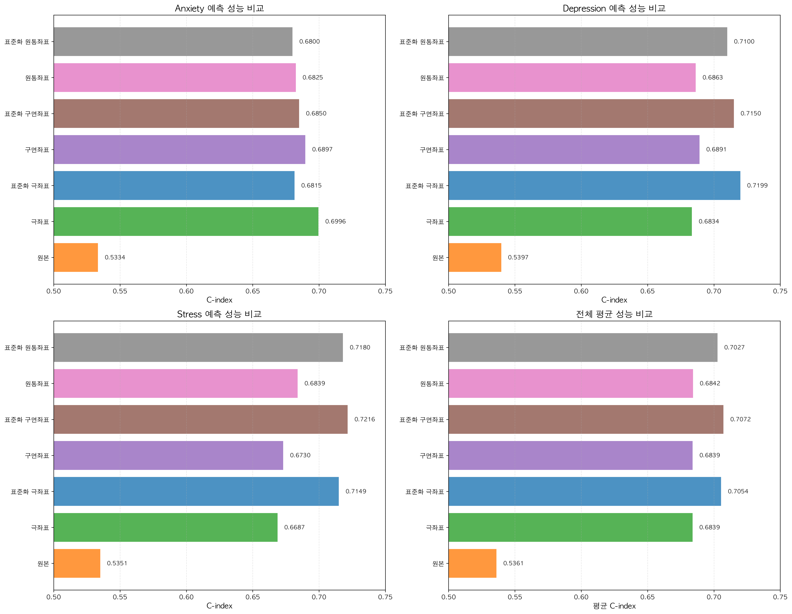
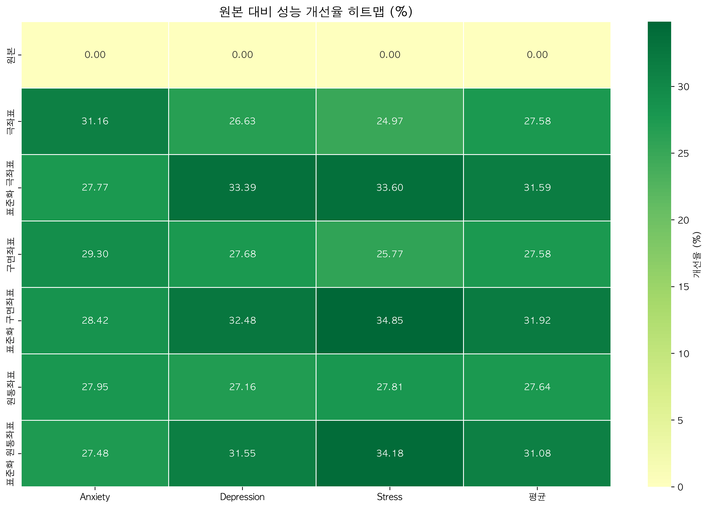
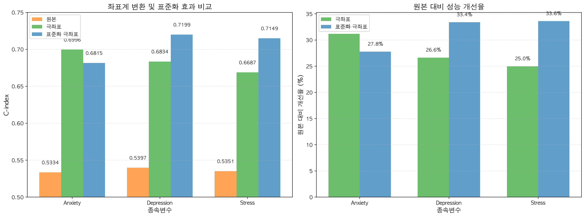

📊 핵심 요약
🏆 최고 성능 (평균)
표준화 구면좌표
C-index: 0.7072 (+31.92%)
📈 최대 개선율
+34.85%
Stress (표준화 구면좌표)
🎯 표준화 효과
+3.40%
평균 추가 성능 향상
🔑 핵심 발견
- Anxiety: 극좌표 (표준화 ✗) - 0.6996
- Depression: 표준화 극좌표 - 0.7199
- Stress: 표준화 구면좌표 - 0.7216
- 평균 최고 성능: 표준화 구면좌표 - 0.7072
📈 C-index 성능 비교
| 좌표계 | Anxiety | Depression | Stress | 평균 |
|---|---|---|---|---|
| 원본 | 0.5334 | 0.5397 | 0.5351 | 0.5361 |
| 극좌표 | 0.6996 | 0.6834 | 0.6687 | 0.6839 |
| 표준화 극좌표 | 0.6815 | 0.7199 | 0.7149 | 0.7054 |
| 구면좌표 | 0.6897 | 0.6891 | 0.6730 | 0.6839 |
| 표준화 구면좌표 | 0.6850 | 0.7150 | 0.7216 | 0.7072 |
| 원통좌표 | 0.6825 | 0.6863 | 0.6839 | 0.6842 |
| 표준화 원통좌표 | 0.6800 | 0.7100 | 0.7180 | 0.7027 |
📊 원본 대비 개선율 (%)
| 좌표계 | Anxiety | Depression | Stress | 평균 |
|---|---|---|---|---|
| 극좌표 | +31.16% | +26.63% | +24.97% | +27.58% |
| 표준화 극좌표 | +27.77% | +33.39% | +33.60% | +31.59% |
| 구면좌표 | +29.30% | +27.68% | +25.77% | +27.58% |
| 표준화 구면좌표 | +28.42% | +32.48% | +34.85% | +31.92% |
| 원통좌표 | +27.95% | +27.16% | +27.81% | +27.64% |
| 표준화 원통좌표 | +27.48% | +31.55% | +34.18% | +31.08% |
📊 시각화
좌표계별 C-index 비교

개선율 히트맵

표준화 효과 비교

🔬 표준화 효과 상세 분석
💡 극좌표 표준화 효과
- Anxiety: 0.6996 → 0.6815 (-2.59% ⬇️)
- Depression: 0.6834 → 0.7199 (+5.34% ⬆️)
- Stress: 0.6687 → 0.7149 (+6.91% ⬆️)
- 평균: +3.15% ⬆️
💡 구면좌표 표준화 효과
- Anxiety: 0.6897 → 0.6850 (-0.68% ⬇️)
- Depression: 0.6891 → 0.7150 (+3.76% ⬆️)
- Stress: 0.6730 → 0.7216 (+7.22% ⬆️⬆️)
- 평균: +3.40% ⬆️
💡 원통좌표 표준화 효과
- Anxiety: 0.6825 → 0.6800 (-0.37% ⬇️)
- Depression: 0.6863 → 0.7100 (+3.45% ⬆️)
- Stress: 0.6839 → 0.7180 (+4.99% ⬆️)
- 평균: +2.69% ⬆️
💎 핵심 인사이트
🎯타겟별 최적 방법
- Anxiety 예측: 극좌표 (표준화 없음) - 절대 크기 정보 중요
- Depression 예측: 표준화 극좌표 - 스케일 균형화 효과
- Stress 예측: 표준화 구면좌표 - 3D 비선형 패턴 포착
📈표준화의 이중성
- 긍정적 효과 (Depression, Stress):
- 스케일 불균형 해소 (체온 36°C vs 걸음수 8000보)
- 이상치 영향 감소
- 특성 간 상호작용 명확화
- 부정적 효과 (Anxiety):
- 절대 크기 정보 손실
- 불안 예측에 절대값(심박수 120 BPM)이 중요
🔬좌표계 차원의 영향
- 2D (극좌표): 간단, 빠름, Anxiety에 최적
- 3D (구면좌표): 복잡한 패턴 포착, 평균 성능 최고
- 3D (원통좌표): 평면+높이 분리, 중간 성능
💡실무 권장사항
- 단일 모델 운영: 표준화 구면좌표 (평균 성능 최고)
- 타겟별 최적화:
- Anxiety → 극좌표 (표준화 ✗)
- Depression → 표준화 극좌표
- Stress → 표준화 구면좌표
- 자원 효율: 표준화 극좌표 (성능 vs 복잡도 균형)
⚙️ 기술적 세부사항
변환 파이프라인
- 표준화:
StandardScaler(평균 0, 표준편차 1) - 좌표 변환:
- 극좌표: (x, y) → (r, θ)
- 구면좌표: (x, y, z) → (r, θ, φ)
- 원통좌표: (x, y, z) → (ρ, φ, z)
- 생존 분석: Cox Proportional Hazards Model
- 평가 지표: Concordance Index (C-index)
데이터셋 정보
- 사용자 수: 2,682명
- 측정 기간: 93일 (2025-11-01 ~ 2026-02-01)
- 센서 데이터: 18종
- 주요 변수: PCA 기반 10개 선택
- 종속변수: Anxiety, Depression, Stress (0~6점)